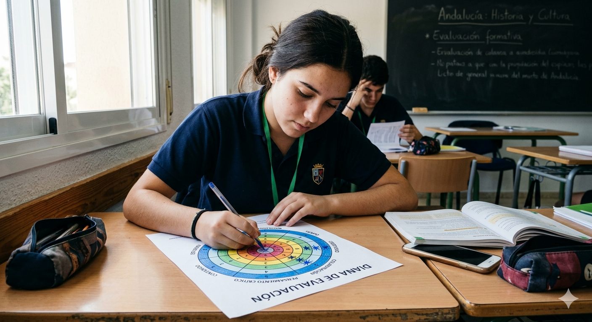
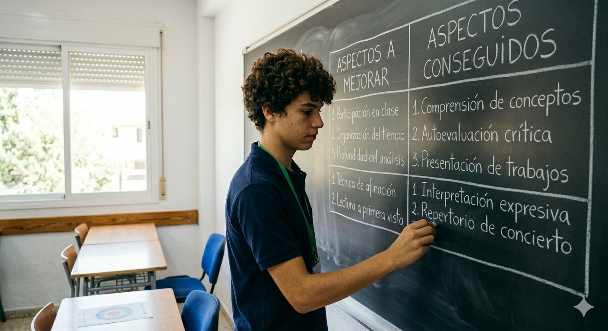

Actividad 1: Introducción a la grabación y escucha activa.
- Actividad 1: Introducción a la grabación y escucha activa.
- Escuchar la explicación del profesor/a sobre la actividad.
- Observar cómo se realiza una grabación sencilla con un dispositivo móvil.
- Participar en una breve reflexión sobre la importancia de la escucha en la música
Actividad 2: Primera grabación.
Actividad 2: Primera grabación.
- Preparar el fragmento musical trabajado en clase.
- Buscar una posición adecuada para grabarte (postura, sonido).
- Realizar una grabación con tu instrumento.
Canal Youtube de ht-Sinfonieorchester- Frankfurt Radio Symphony (CC BY-NC)
Actividad 3: Escucha y reflexión.
Actividad 3: Escucha y reflexión.
- Escuchar tu grabación con atención.
- Completar la diana de autoevaluación.
- Reflexionar sobre tu interpretación.

Imagen generada con IA Google Gemini.
Actividad 4: Segunda grabación (mejora).
Actividad 4: Segunda grabación (mejora).
- Revisar los aspectos que quieres mejorar.
- Volver a interpretar el mismo fragmento.
- Realizar la segunda grabación.
Actividad 5: Puesta en común y reflexión final.
Actividad 5: Puesta en común y reflexión final.
- Comparar tu primera y segunda grabación.
- Participar en la puesta en común en clase.
- Compartir tu experiencia.

Imagen generada con IA de Google Gemini.